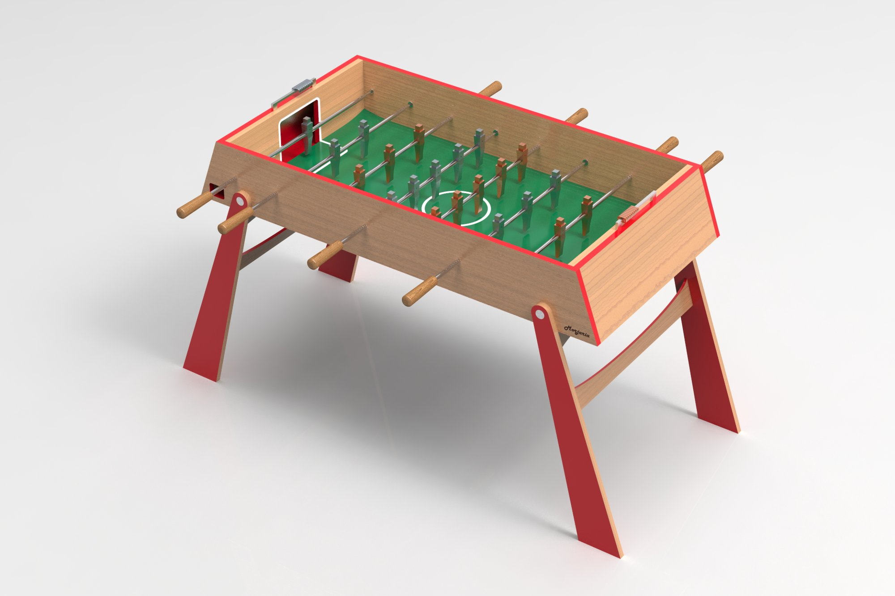
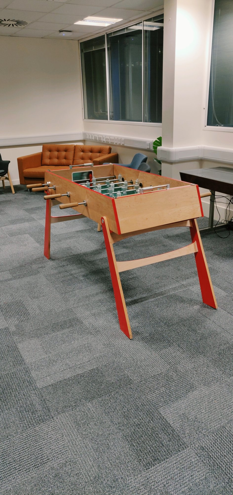
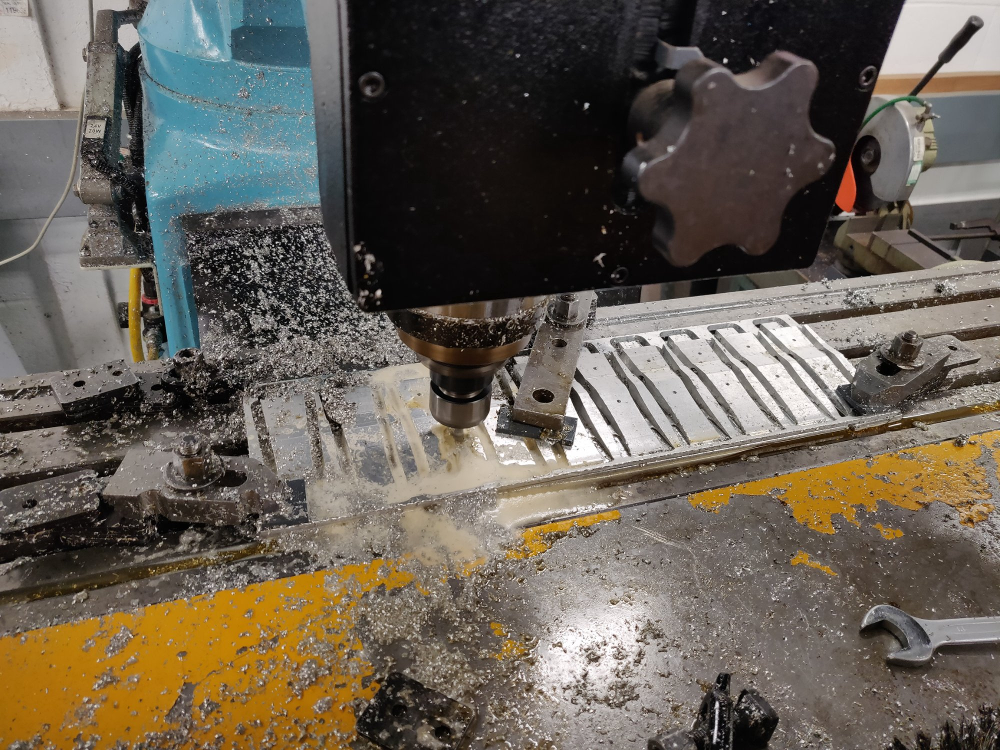
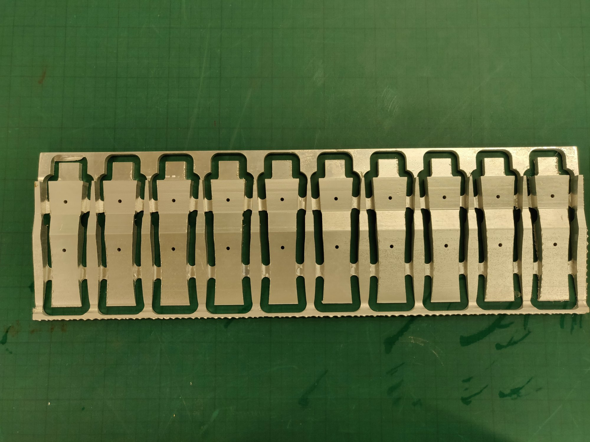
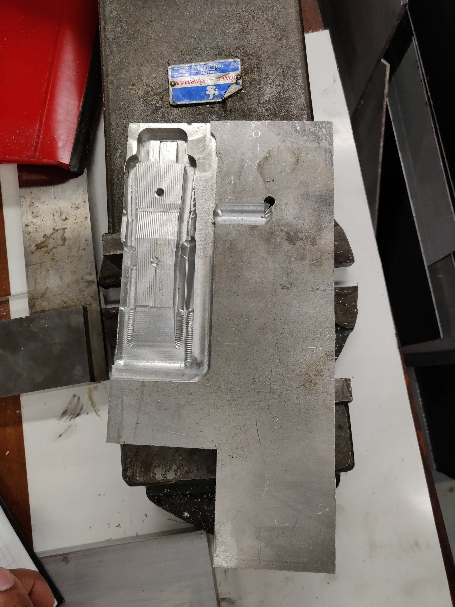
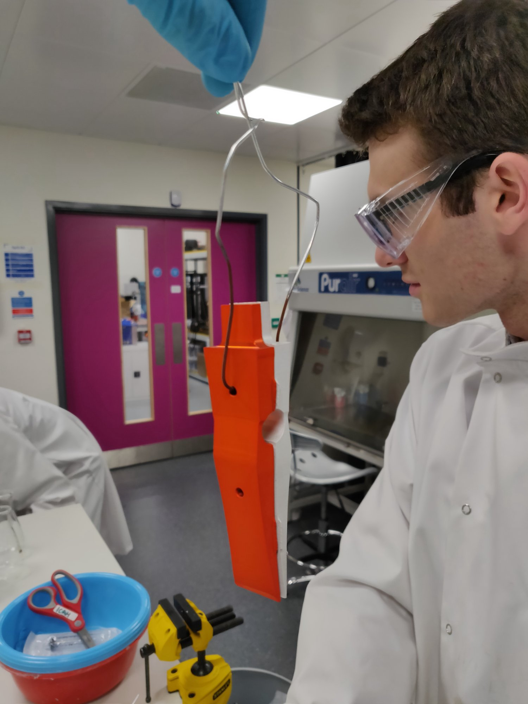
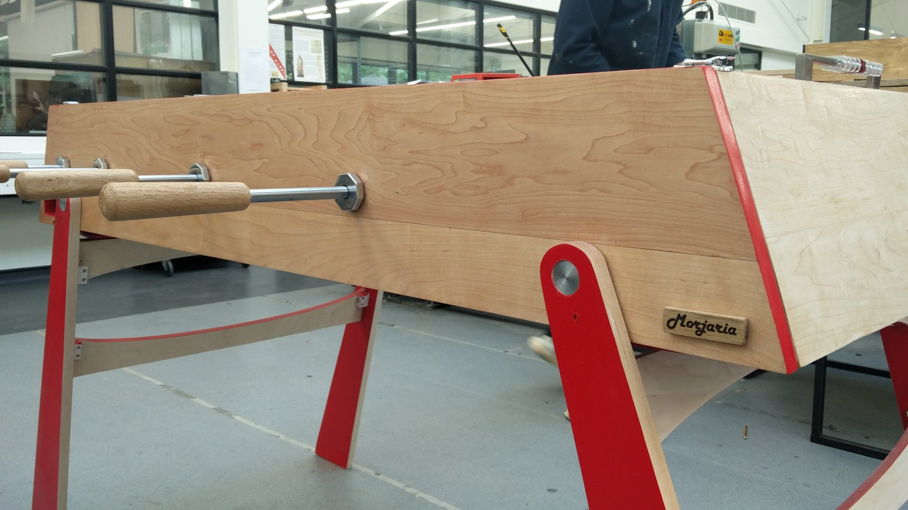
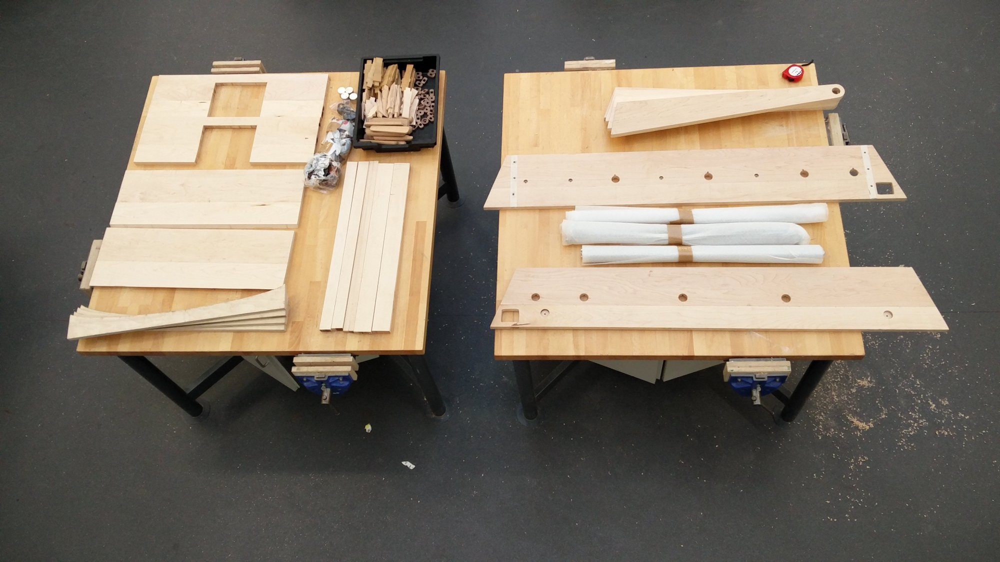
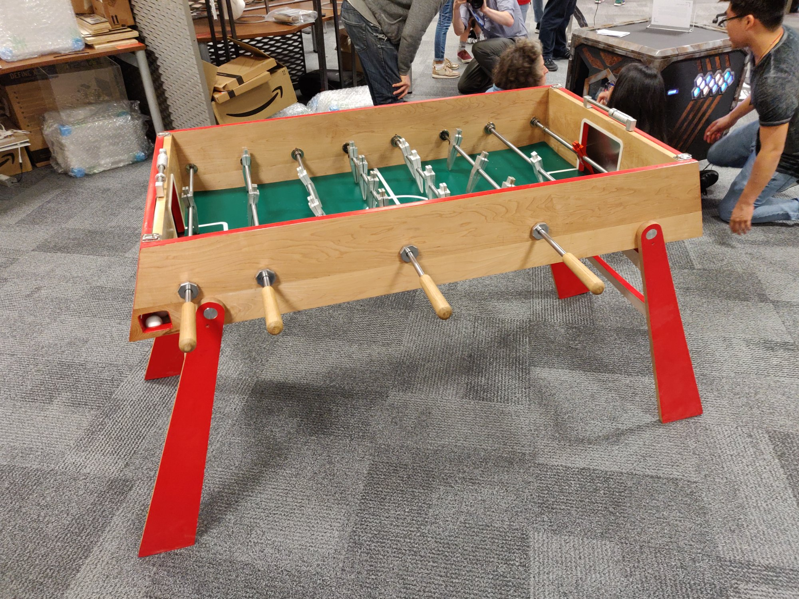

A football table that I carved and finished from raw stock. It was my flagship DFM large-scale 3D CNC project, and the project that taught me the most about taking a design all the way to a finished object that you actually want to play on.

Featuring anodised aluminium players and a varnished maple frame, the table also has a laminated plywood pitch with inclined corners, routed oak handles and steel-plated goals for a satisfying thunk. ICAH backed the build with project funding after I pitched the idea and an extensive production plan. I then made every part end-to-end in the workshop.

With no in-house CNC milling available, I first 3D-routed the players in cherry and maple, and that work became the basis for the workshop's 3D-routing process. I still dreamed of solid aluminium, so I tracked down a Europa mill and wrestled it into PC-driven CNC, rather than floppy disks and manual G-code. After proving the workholding, step-overs and finish passes on a single part, I committed to a 44-part production run. Before long, all 22 players were milled in 6082 aluminium and ready to take the field.



Getting a consistent anodised colour across all the players took a fair few trials to dial in the dye time and current. This was particularly tricky as I was creating my own batch anodisation setup. I grain-matched the maple across the body, routed the oak handles and laminated the plywood pitch with inclined corners. After mixing a bespoke pitch colour, I rounded off the project, meticulously finishing every part by hand. I'm glad to say it lived up to extensive play-testing afterwards (much of it by my own hand).



